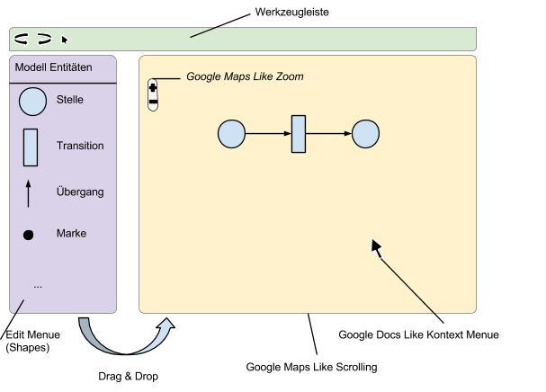
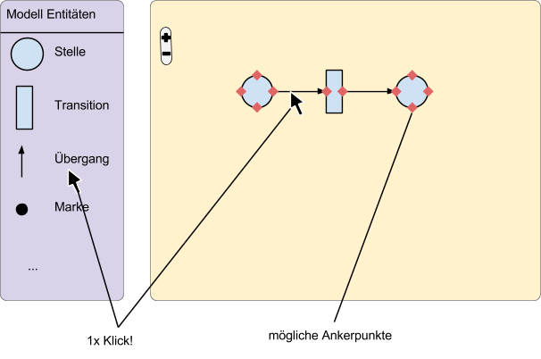
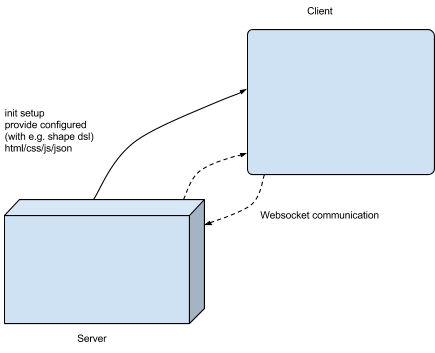
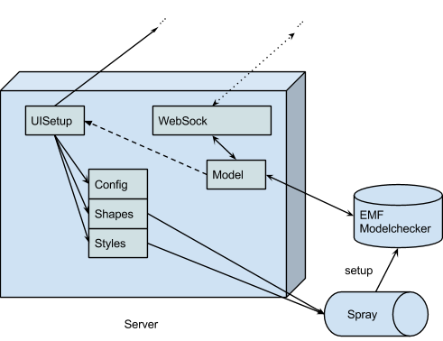
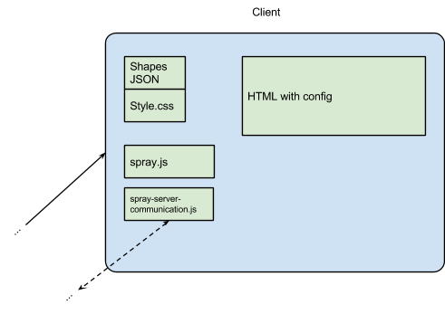
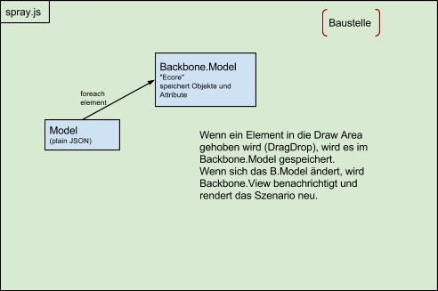

Dokumentation: Spray Javascript Framework
Spray Javascript Framework
Teamprojekt MSI
Sven Hodapp
Thorsten Niehues
Simon Schneeberger
2.3.1 Grafische Entwürfe der Benutzeroberfläche
2.3.2 Anforderungen an die Shape-API
2.3.3 Anforderungen an die Shapes
2.3.4 Anforderungen an die Werkzeuge
2.4 Nicht-funktionale Anforderungen
3.1 Entwicklungs- und Testumgebung
3.2.3 Programmfluss bzw. Informationsfluss
3.4.1 SVG vs. Canvas, bzw D3.js gegen Kinetic.js
3.5 Auswahl Technologien und JavaScript-Frameworks
4.1 Organisation des Client-Codes
Nachstehend ist grob ein Fahrplan des Projekts definiert. Die Meilensteine des Projekts sind mit M gekennzeichnet.
Die Anforderungsanalyse spezifiziert die Anforderungen an das Browser Shape Tool. Mithilfe einer Recherche und Brainstorming werden die Nutzungsanforderungen aufgestellt und daraus die funktionalen und nicht-funktionalen Anforderungen abgeleitet. Grafische Entwürfe der Benutzeroberfläche werden zeigen, wie die Nutzungsanforderungen aus Blackbox-Sicht umgesetzt werden können.
Nachstehend sind die Vorgaben der Projektaufttraggeber definiert.
Um die Funktionen des Systems zu definieren, müssen zuerst die Nutzungsanforderungen
identifiziert werden. Diese sind sogenannte Akzeptanzkriterien und werden
im Abnahmetest, welcher am Ende des Projekts durchgeführt wird, validiert. Die
Anforderungen wurden nummeriert und nach dem MoSCoW-Prinzip priorisiert.
Nr. | Anforderung | Prio |
Der Nutzer muss das Modell betrachten können ( “View Mode”). | C | |
Der Nutzer muss das Modell z.B. als Dokumentation einbinden können. (d.h. der View Mode muss druckbar seitens eines Webbrowsers sein) | C | |
Der Nutzer muss das Modell bearbeiten können (“Edit Mode”). | M | |
Der Nutzer muss zwischen View und Edit Mode wechseln können. | M | |
Das System muss eine Spray Shape Definition laden können. | M | |
Das System muss die Semantik eines Shapes verstehen/abbilden können. | M | |
Der Nutzer muss Shape-Elemente gemäß der zugrunde liegenden Spray Shape-DSL zeichnen können.
| M | |
Der Nutzer muss die Bearbeitungssicht zoomen können. | C | |
Der Nutzer muss den Zustand speichern können.
| M | |
Der Nutzer muss einen gespeicherten Zustand des Modells laden können.
| M | |
Der Nutzer muss erkennen können, ob der Zustand valide ist oder nicht. | C | |
Der Nutzer muss durch das System die Elemente automatisch ausrichten lassen können. “Ausrichtungsassistenz” | W |
Anhand von grafischen Entwürfen der Benutzeroberfläche wird dargestellt, wie die
Nutzungsanforderungen aus Blackbox-Sicht umgesetzt werden sollen. Die Screens
und die dazugehörigen Beschreibungen definieren, wie das Shape-Tool funktioniert
und wie es zu bedienen ist. Diese Systemanforderungen werden im Systemtest
verifiziert.

Abbildung 1: Entwurf GUI (Beispiel Modell: Petrinetz)

Abbildung 2: Ankerpuntek Auswahl
Während funktionale Anforderungen definieren was das System leisten soll, müssen die Eigenschaften des Systems ebenfalls spezifiziert sein.
Nicht-funktionale Anforderungen werden, wie die funktionalen Anforderungen, im
Systemtest verifiziert und müssen daher messbar sein. Um nicht-funktionale Anforderungen
zu spezifizieren, dient die ISO 25010 als Checkliste:
Zuverlässigkeit:
Benutzbarkeit
Sicherheit
Leistung und Effizienz
Wartbarkeit
Übertragbarkeit
Kompatibilität
Funktionale Tauglichkeit
Nachdem die Anforderungen an das System definiert worden sind, wird das System durch die Architekturbeschreibung technisch entworfen. Dazu werden die eingesetzten Technologien und der Grob- sowie der Feinentwurf erarbeitet.
Git Repository: https://github.com/fafilipp/tprj-msi-ss13
Projektmanager: http://lab4ideas.de/redmine/projects/tprj-msi-ss13/roadmap
Entwicklung mit einer individuellen IDE, z.B. Eclipse.




Prinzipielle Idee für einen groben Programmfluss (“wie will ich es programmieren können”) und welche Informationen wo gebraucht werden, eventuell gibt es hier auch schon eine grundlegende Idee wie bestimmte Informationen beschaffen sein können.
<div id="draw" style="width:700px; height: 425px;"></div>
|
Datenabbildung durch Backbone.js. Alle möglichen Shapes müssen abgebildet werden können.
Vorteile | Nachteile | |
SVG |
|
|
Canvas |
|
|
You should use Canvas for:
You should use SVG for:
Quelle: http://dev.opera.com/articles/view/svg-or-canvas-choosing-between-the-two/
LucidCharts basiert auf vielen einzelnen Canvas-Elementen, die per Layer überlappt werden. Das benötigt viel canvas-nahe Programmierung und ist nach eigenen Erfahrungen sehr mühselig. Der Vorteil liegt in der Performanz bei vielen Objekten auf der Seite. Eine ähnliche Fragestellung findet man hier:http://stackoverflow.com/questions/6381101/easeljs-vs-multiple-canvas-vs-hidden-canvas-for-interactiveness
Conclusion:
Microsoft vergleicht die beiden Technologien Canvas und SVG: Bitte zwingend durchlesen[a][b]:
http://msdn.microsoft.com/de-de/library/ie/gg193983%28v=vs.85%29.aspx
Ein Vergleich von Microsoft zeigt die Unterschiede SVG und Canvas betreffend dem Erstellen einer Benutzeroberfläche ziemlich gut auf und bestätigt die bisher durchgeführte Recherche:
http://msdn.microsoft.com/de-de/library/ie/gg589494%28v=vs.85%29.aspx
.
→ Auswahl SVG
Die zwei bekanntesten SVG Javascript Bibliotheken sind D3.js[c] und RaphaelJS. Die Frage lautet nun welche Bibliothek eignet sich für unseres Tool?
Kurz zusammengefasst D3 ist umfassender und gut geeignet für Visualisierung und Interaktionen von einer Menge Daten. RaphaelJS im Gegensatz kann einfacher interaktive Graphiken erstellen.
Quelle: http://www.stuffdavidsays.com/2012/05/15/why-d3-js/ und http://coding.smashingmagazine.com/2012/02/22/web-drawing-throwdown-paper-processing-raphael/
Einige Beispiele:
RaphaelJS: http://raphaeljs.com/graffle.html, http://bramp.github.io/js-sequence-diagrams/
Petrinetz-Editor mit RaphaelJS: http://www.jointjs.com/demos/run.html?unit=pn
D3: http://bl.ocks.org/rkirsling/5001347, http://dev.model.udibauman.stackmobapp.com/
Die Wahl der Technologie fällt auf D3. Dabei ist noch abzuklären ob mit D3 alle unsere Anforderungen erfüllbar sind.
Weitere Technologien, die interessant sein könnten:
Was | Möglich | Wie |
Basisshapes darstellbar, Linie/Polylinie, Kreis, Rechteck, Abgerundete Recktecke, Quadrat, Ellipse, Label, Image | JA alle | z.B. draw2d.shape.basic.Oval |
Connections zwischen Shapes | JA | zwischen ConnectionAnchors kann ein ConnectionRouter erstellt werden |
Texte der Shapes editierbar, platzierbar | JA | siehe auch Locator for children shapes |
Shapes müssen durch Kasten markiert und gruppiert werden können | JA | multiple selection |
Interaktive Verschachtelung | (NEIN) - vom Framework nicht unterstützt. | Funktionalität wird von uns implementiert |
Allgemeine Verschachtelung | JA | children figures |
Eigenes Kontextmenü für Shapes | JEIN | siehe aber Connection with context menu |
Eigenes Kontextmenü für Conenctions | JA | Conntection with context menu |
spezifische Kontextmenüerweiterungen | NEIN | |
Ankerpunkte | JA, mehrere Ankerpunkte pro Shape möglich, mehrere Connections zu einem Ankerpunkt möglich | Connections |
Nach Klick auf Shape wird Shape aktiv und die Bearbeitungspunkte werden angezeigt | JA | |
Erscheinen einer Auswahl Ankerpunkte bei Klick auf eine Verindung im Edit menü | JA | Canvas Interaction Decoration |
Doppelklick | JA | |
Doppelklick in das Label -> bearbeitbar | JA | |
Defaultwerte Label | JA | |
Rapidbuttons | NEIN | Muss selbst implementiert werden |
Styles anpassbar | JA | setCSSClass für Shapes |
beliebige Eigenschaften für Shape | JA | setUserData für Shapes |
Undo/Redo | JA | |
Select | JA | |
Hotkeys | JA | |
Rotieren | NEIN | preAlpha |
DragnDrop aus Toolleiste | JA | |
Speichern, Laden | JA | JSON writer |
Zoom | JA | |
An Grid ausrichten | JA | |
Tooltip | JA | |
Highlighting bei Mousover | JA | |
Reihenfolge der Elemente | NEIN | allerdings getZOrder für Shape |
Aufgrund der Anfoderungsanalyse haben wir uns für das draw2d Framework zur Anzeige der Shapes im Browser entschieden. Aufbau des Repositoriums:
Hier werden kleine Testbeispiele ausprobiert und festgehalten
Hier werden Spezifikationen die für den Code gelten gesammelt, insbesondere wird hier die JSON-Shape-Defintion aufbewahrt.
Hier ist der hauptsächliche Quellcode. Darin enthalten ist insbesondere ein Server auf Basis des Spray-Frameworks, sowie unsere JavaScript-Quellen.
Client-JavaScript-Code
Client-Code wird hier vom Server zusammengestellt und konfiguriert (z.B. alle JavaScript Imports im HTML Header).
Ein Abbild von Spray’s Shape-Grammatik, mit dem von uns produzierten JSON/JavaScript-Shape Generator. (Ein von Spray isolierter Xtext-Workspace, zum Ausbau des Generators)
Der Client-Quellcode ist in zwei Teile gegliedert:
Sinn dahinter ist, dass spray2d API-kompatibel zu draw2d gehalten wird, so dass dieser Code bei Bedarf ohne große Probleme auch wieder in den draw2d Zweig (unter GPL[1]) fließen kann. Hier finden sich unsere erweiterten Implementierungen, insbesondere die von Spray vorgegebenen primitiven Shapes.
In htwg.spray werden die Hilfstools verwaltet, wie Websockets, Menü und die Shape-Fabrik. Die Shape-Fabrik produziert aus Shape-JSON-Objekten kontrete draw2d Klassen-Instanzen. Diese Instanzen können dann z.B. vom Menü weiterverwendet werden, so dass ein Benutzer sie zeichnen kann.
Wir sind gezwungen lib/draw2d_3.0.0/src/shape/basic/Label.js zu patchen. Label.repaint(attributes) wurde für die Textausrichtung (roter Farbe) angepasst.
repaint: function(attributes) { if(this.repaintBlocked===true || this.shape===null){ return; } // PERFORMANCE Problem. Warum muss der Cache bei jedem zeichnen gelöscht werden....? // Macht keinen Sinn. Andere Lösung muss her. // Dummerweise zeichnen sich sonst die Labels nicht in der korrekte Breite this.cachedWidth=null; this.cachedHeight=null; this.cachedMinWidth=null; this.cachedMinHeight=null; // style the label var lattr = {}; lattr.text = this.text; var userData = this.getUserData(); var tAlign = "left"; var vAlign = "top"; if ( userData.hasOwnProperty("textAlign") ) { tAlign = userData.textAlign; } if ( userData.hasOwnProperty("verticalAlign") ) { vAlign = userData.verticalAlign; } //0.5 constant number for width of single letter var letterWidth = parseInt(this.fontSize*0.5); switch ( tAlign ){ case "left": lattr.x = 0; break; case "center": lattr.x = this.getWidth()/2 - parseInt(this.text.length/2) * letterWidth; break; case "right": lattr.x = this.getWidth() - this.text.length * letterWidth; break; default: lattr.x = 0; } switch ( vAlign ){ case "top": lattr.y = parseInt(this.fontSize/2); break; case "middle": lattr.y = this.getHeight()/2; break; case "bottom": lattr.y = this.getHeight() - parseInt(this.fontSize/2); break; default: lattr.y = 0; } lattr["font-weight"] = (this.bold===true)?"bold":"normal"; lattr["text-anchor"] = "start"; lattr["font-size"] = this.fontSize; if(this.fontFamily!==null){ lattr["font-family"] = this.fontFamily; } lattr.fill = this.fontColor.hash(); this.svgNodes.attr(lattr); this._super(attributes); }, |
Compartments
Figure.js updateCompartment:function( draggedFigure ) { if (this !== draggedFigure.getParent() && draggedFigure.getParent() !== null) { //console.log("parent != new parent , parent name:" + draggedFigure.getParent().NAME); //draggedFigure.getParent().resetChildren(); if (this.allowedCompartmentChilds !== null) { if (this.allowedCompartmentChilds.indexOf(draggedFigure.NAME) >= 0) { this.addFigure(draggedFigure, new spray2d.layout.locator.FigureLocator()); draggedFigure.setDraggable(true); console.log("add " + draggedFigure.NAME + " to " + this.NAME); console.log("allowed childs: " + this.allowedCompartmentChilds); } else { console.log("figure " + draggedFigure.NAME + " is not in the allowed child list"); console.log("allowed childs: " + this.allowedCompartmentChilds); draggedFigure.getParent().removeChild(draggedFigure); } } else { console.log("allowed child list is not defined"); } } }, setAllowedCompartmentChilds: function(_allowedCompartmentChilds) { this.allowedCompartmentChilds = _allowedCompartmentChilds; }, removeChild: function(child) { var childs = this.children; this.children.each(function(i,e){ if (e.figure == child) { e.figure.setCanvas(null); childs.remove(child); } }); }, |
Patches in lib\draw2d_3.0.0\src\command\CommandDelete.js
} for(var i=0; i<ports.getSize(); i++) { var port = ports.get(i); port.setCanvas(null); } } //PATCH BY SISCHNEE if ( htwg.spray.utils.notifyEcore ){ var ID = htwg.spray.utils.getIndexFromID(this.figure.getId()); if ( ID >= 0 ){ htwg.spray.websocketEcore.send({"type":"ecore", "command":"removeObj", "domainObj":this.figure.sprayName, "ID":ID.toString()}); } } //END OF PATCH this.canvas.removeFigure(this.figure);
if(this.connections===null) this.connections = new draw2d.util.ArrayList();
// remove this figure from the parent // if(this.parent!==null) |
Allgemeiner Workflow:
Wenn der Client wiederhergestellt werden soll, muss das gesamte Modell vom Server auf den Client übertragen werden.
Gedanken:
Modell synchron halten bei jeder Aktion:
Eventuell brauchen wir gar keine Deltas, wenn wir den Client Stand-Alone hinbekommen. Client produziert XMI und das wird getestet, ob es valide ist.
Wermutstropfen ist, dass hier voraussichtlich erst Februar 2014 die PUT/POST Calls implementiert werden.
E-Mail Verkehr an emf-rest@modeling-languages.com:
Hi together,
is it possible to modify the model instance with the REST-API?
With the generated JS-API I can get the model:
var getCallback = function(data) {console.log(data)}
RestApi.callGet("http://localhost:8080/SimpsonsTutorial/app/Family/Simpsons", getCallback, depth=1)
But can I add some content to the model, like:
RestApi.callPut("http://localhost:8080/SimpsonsTutorial/app/Family/Simpsons/pets/Dog", {"name": "Knechtruprecht", "breed": "Unknown"}, getCallback)
Such that this new dog will appear in the model? (And also in the XMI model instance)?
Regards,
Sven Hodapp
Antwort:
Hi Sven,
Yes it is possible, we are implementing the PUT/POST/DELETE methods to complete the API. There will be an option to save the changes in the XMI file.
We plan to release it in february of the next year.
Regards,
Camilo Alvarez
Daher ist EMF-REST vorerst aus dem Rennen, was die Persistierung betrifft.
[d]
[1] GNU General Public License
[a]Super Artikel, sehr hilfreich! Ich denke dieser Artikel unterstreicht unser Vorhaben SVG zu benutzen. Sollen wir dennoch einen Prototyp erstellen?
[b]Ja auf jedenfall! Im Prinzip habe ich mit Canvas und Kinetic.js ja schon einen Prototyp gemacht für die BA. Diesen kann ich einfach etwas verkleinern für die nächste Besprechung. Dann noch einen Prototyp mit D3 und SVG, was Thorsten übernehmen könnt, bzw ja eh schon angefangen hat.
[c]Jedoch kann man bei d3 zwischen SVG und Canvas Rendering auswählen. z.b. http://geoexamples.blogspot.de/2013/02/mapping-with-d3js-canvas-or-svg.html
[d]Ja auf jedenfall! Im Prinzip habe ich mit Canvas und Kinetic.js ja schon einen Prototyp gemacht für die BA. Diesen kann ich einfach etwas verkleinern für die nächste Besprechung. Dann noch einen Prototyp mit D3 und SVG, was Thorsten übernehmen könnt, bzw ja eh schon angefangen hat.